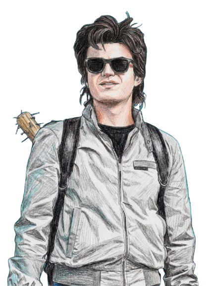

Night Tracker
Upside Down Hunter


Steve Harrington: Night Tracker
Once the "King" of Hawkins High, Steve Harrington evolved into the group’s ultimate
protector. As the Night Tracker, he is defined by his bravery and his signature weapon: a
nail-studded bat.
Whether navigating the Upside Down or babysitting the kids, he uses his sharp instincts and
newfound maturity to hunt threats in the dark. He’s no longer just a popular jock; he’s the
courageous, spiked-bat-wielding guardian of the crew.
Let's Fight